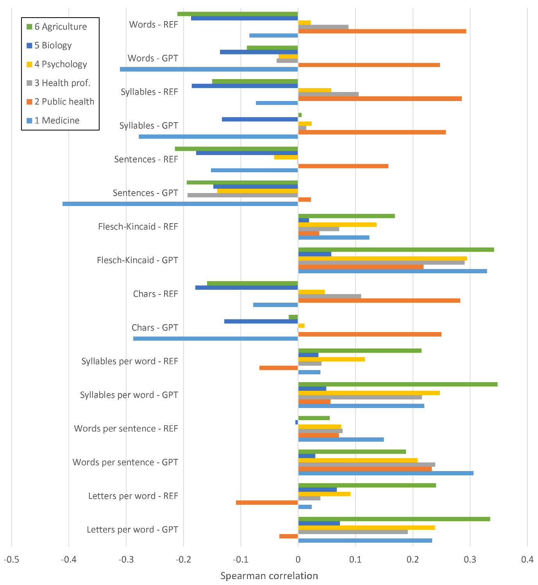
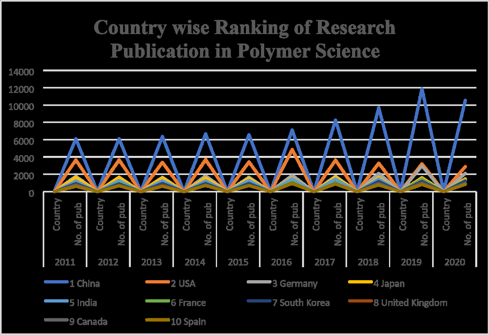
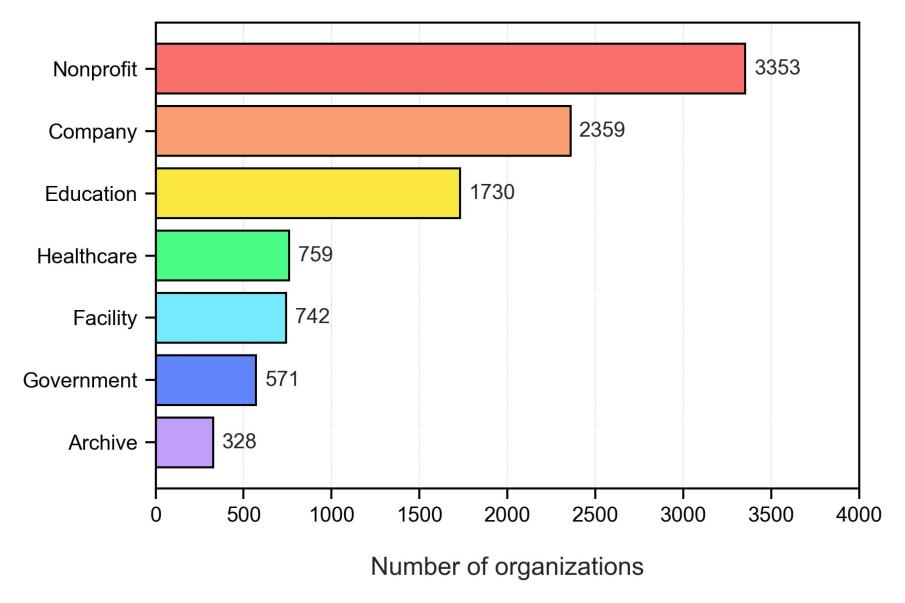
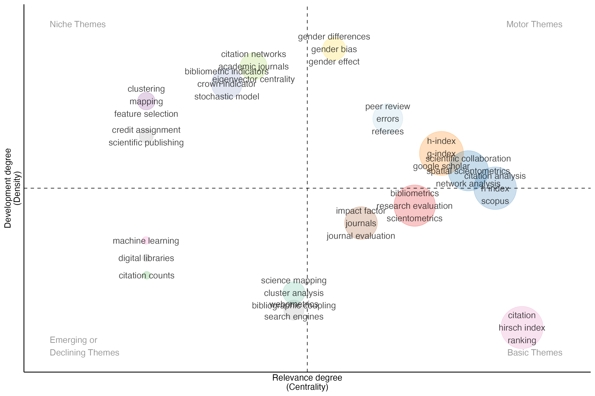

검색 기간: 2026-03-01 ~ 2026-03-25 분야: Science of Science, Bibliometrics, Scientometrics 총 9편 리뷰 완료
모드: PDF | Overall: 4/5

총평: 대규모 REF 데이터를 활용해 ChatGPT가 언어적 복잡도에 전문가보다 과도하게 민감하다는 것을 다분야에 걸쳐 설득력 있게 보여준 시의성 높은 연구이나, 상관분석에 머문 한계와 프록시 점수 사용의 잠재적 편향을 감안해야 한다.
모드: PDF | Overall: ?/5

총평: 인도의 고분자과학 연구 생산성을 계량서지학적으로 개관하는 의도는 타당하나, 데이터 기간 불일치·방법론 불투명·질적 지표 부재라는 근본적 결함이 있다. 저널지 수준의 스크리닝을 통과하기 위해서는 데이터 정합성 수정, 인용 분석 추가, 검색 프로토콜 상세 기술이 반드시 필요하다. 현 상태는 예비 보고서(preliminary report)에 가깝다.
모드: PDF | Overall: ?/5
모드: Citation Analysis (Web-sourced context) | Overall: ?/5
총평: 본 연구는 IRA 약가협상에서 CMS가 실제로 어떤 근거를 어떻게 활용했는지를 처음으로 정량적으로 규명한 선도적 인용 분석으로, QALY 기반 CEA와 비미국 RWE의 광범위한 활용이라는 정책적 함의를 가지며, 향후 협상 주기에 대비하는 근거 전략 수립의 중요한 출발점이 된다.
모드: PDF | Overall: ?/5

총평: 이 연구는 altmetrics 분야에서 개인 사용자 중심의 분석을 넘어 기관 행위자(institutional actors)를 체계적으로 다룬 선구적 작업이다. 공개 데이터셋과 재현 가능한 매칭 파이프라인은 후속 연구를 위한 실질적 기여다. 다만 분석이 기술적 수준에 머물고, 대화형 참여의 낮음·높음을 설명하는 기제 탐색이 없으며, 수동 검증의 신뢰도 문제가 아쉽다. Twitter 플랫폼 자체의 급변하는 환경을 감안하면, 본 연구의 결과는 2022~2023년 시점의 스냅샷으로 해석되어야 하며 현재성에 대한 추가 검증이 필요하다.
모드: PDF | Overall: ?/5

총평: 과학 매핑의 종단적 분석에서 주제 탐지와 계보 재구성 간의 존재론적 불일치를 명료하게 진단하고, 관계 구조 내 fuzzy 계보 측정이라는 원칙적 해법을 제시한 방법론적으로 탄탄한 논문이다.
모드: Web-only (PDF 미확보 — abstract + API 메타데이터 기반) | Overall: ?/5
총평: 베트남 마음챙김 연구 현황을 처음으로 인용 분석한 탐색적 연구로 지역적 가치는 있으나, 방법론적 엄밀성과 비교 맥락 제시가 보강되어야 국제적 설득력을 갖출 수 있다.
모드: Web-only (PDF 미확보 — abstract + API 메타데이터 기반) | Overall: ?/5
총평: ICRC 관습 IHL 연구의 규칙별 인용 패턴을 최초로 정량화한 데이터셋으로서 국제법 과학사회학에 유용한 자원이나, 완전한 평가를 위해서는 원 챕터와 함께 검토되어야 한다.
모드: Web-only (PDF 미확보 — 제목 + API 메타데이터 기반; abstract 미수록) | Overall: ?/5
총평: 인도 지방 대학 상경대 박사논문의 인용 패턴을 체계화하여 도서관 정책에 유용한 로컬 데이터를 제공하지만, abstract 부재라는 기본적 결함이 학술 커뮤니케이션 관점에서 치명적 약점이다.
Claude Code powered by Oh-My-ClaudeCode, SKILL by Jehyun LEE jehyun.lee@gmail.com
Claude Code powered by Oh-My-ClaudeCode, SKILL by Jehyun LEE jehyun.lee@gmail.com